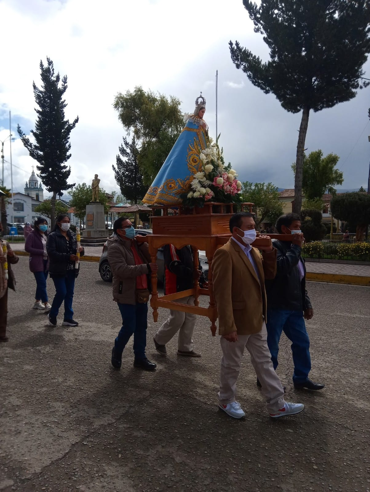
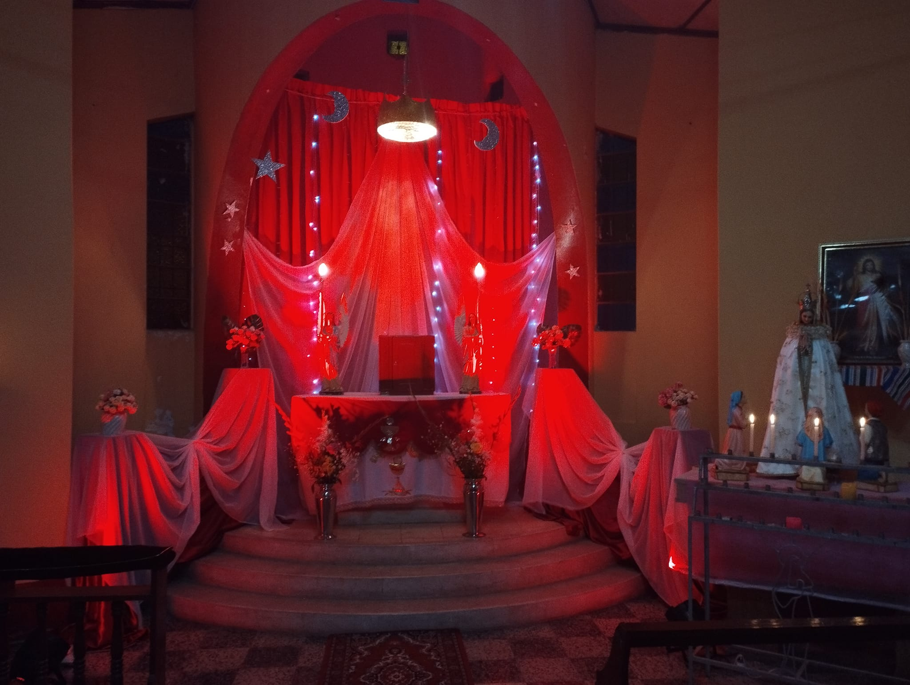
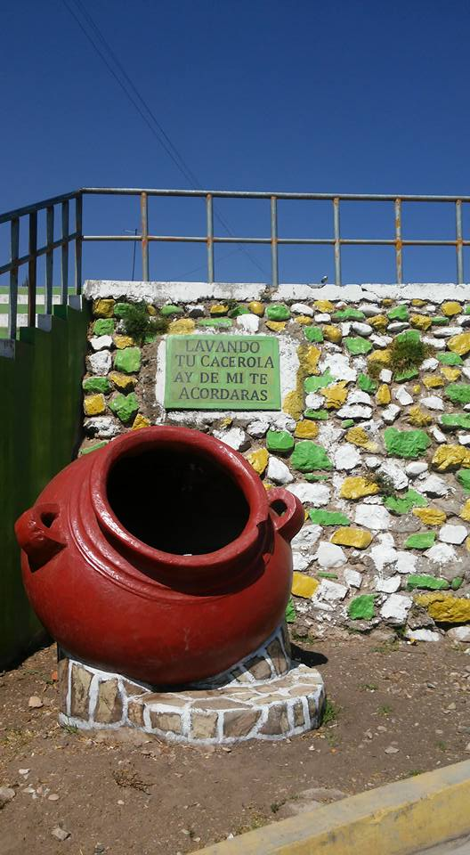
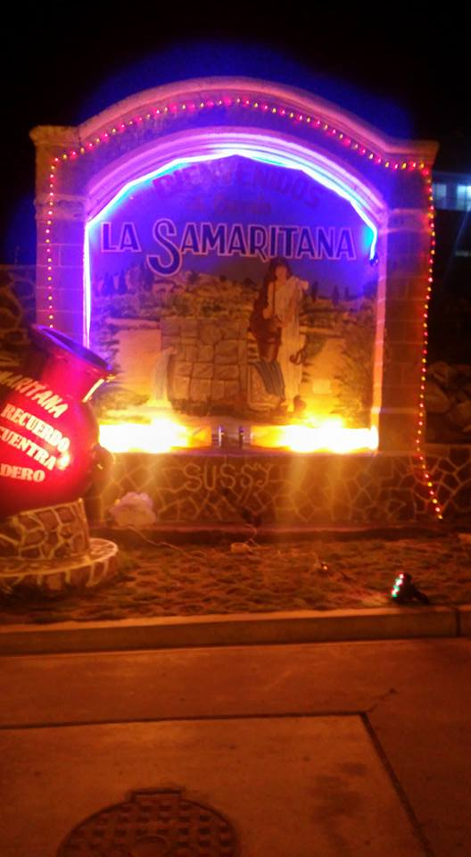
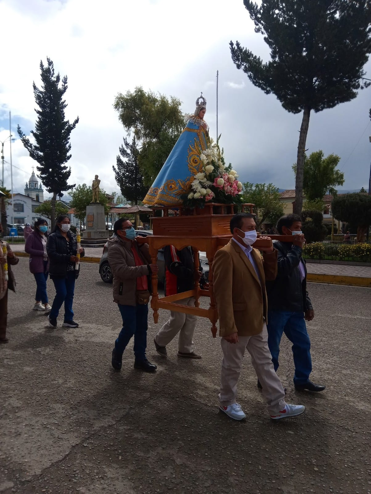
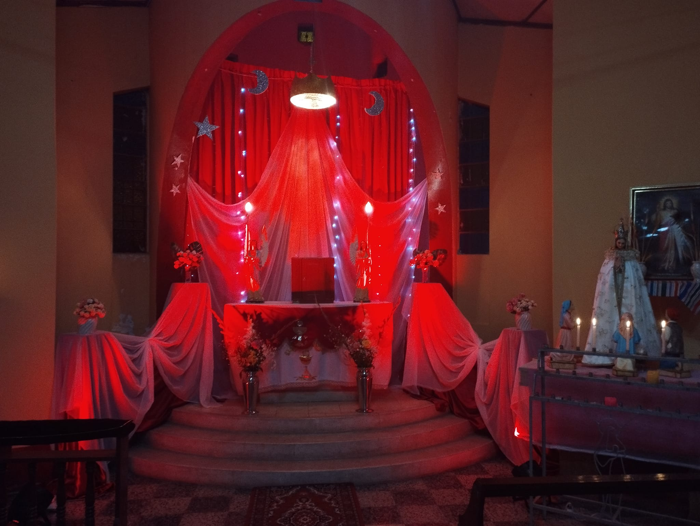
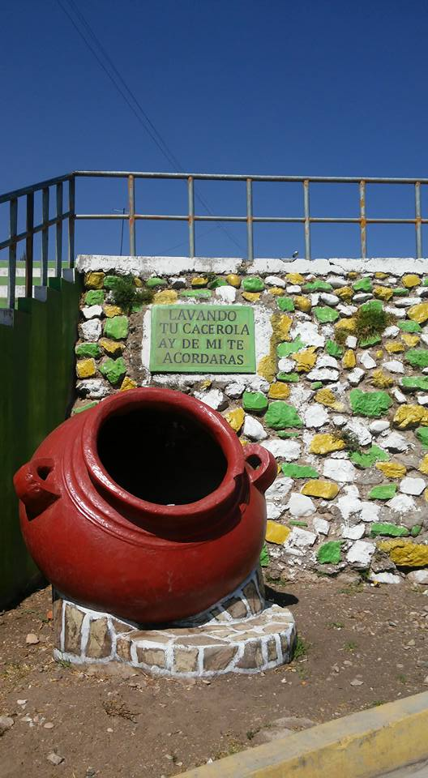
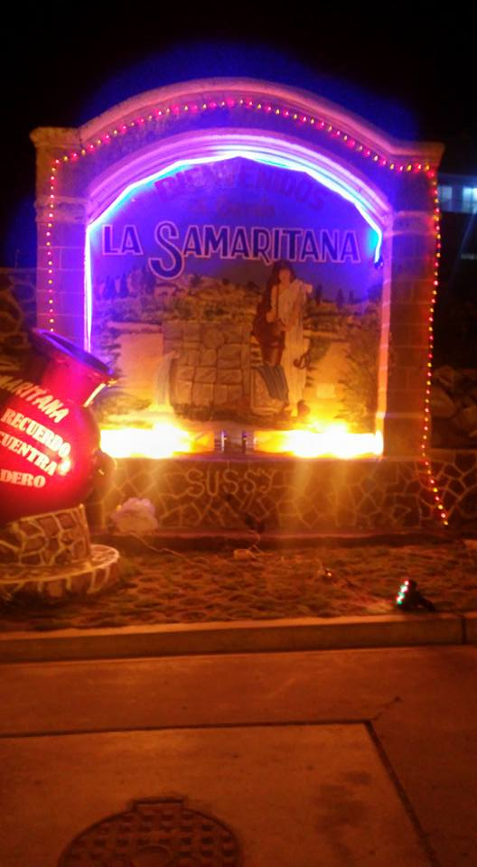
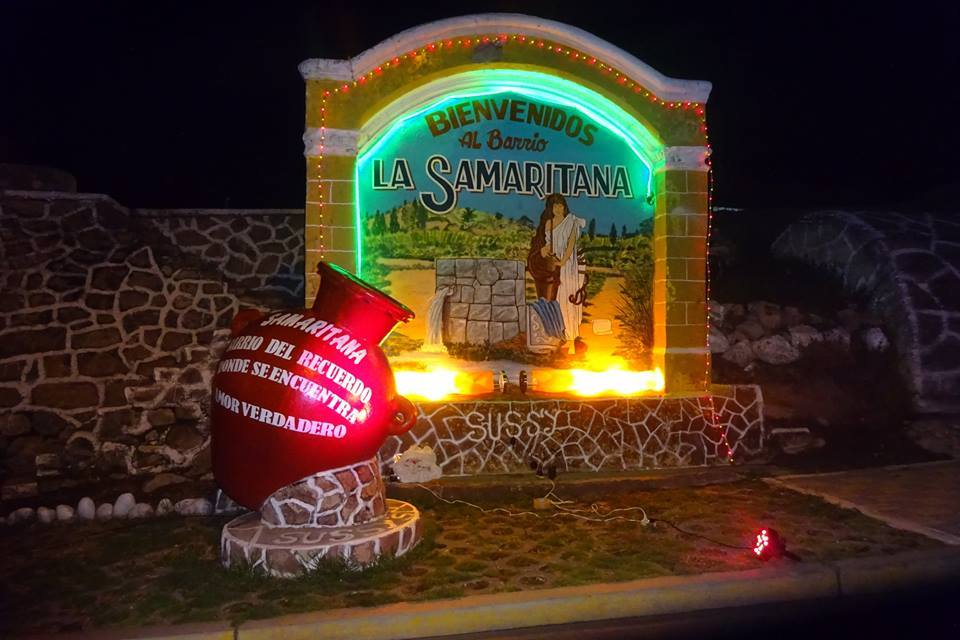
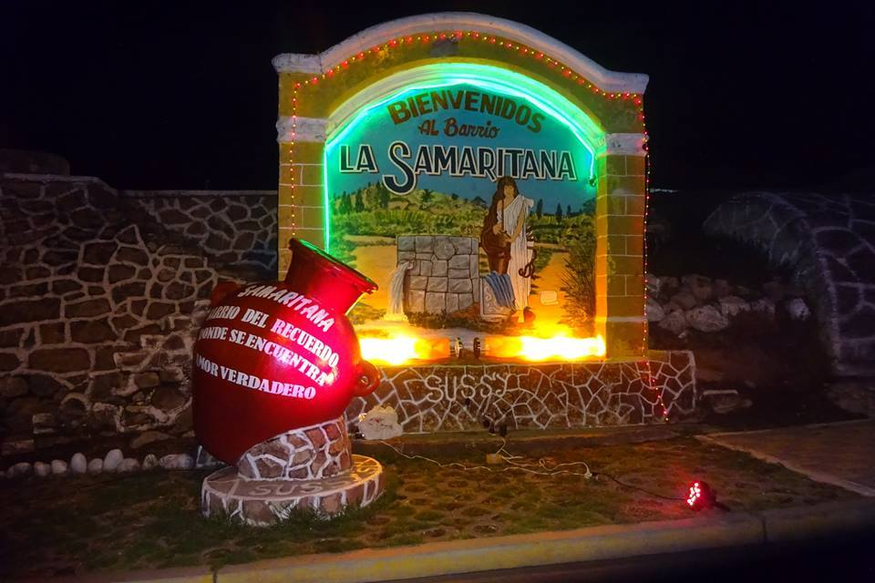

Nuestro Barrio Querido
1Te Contamos Que:
En el Barrio La Samaritana, podrás disfrutar de la tranquilidad y la paz que caracterizan a los barrios más antiguos de la ciudad, así como de la belleza de sus calles. En este barrio podrás conocer la rica historia y tradición de Jauja,
2 Nuestra Historia
La historia del barrio en Jauja está llena de leyendas y tradiciones. Una de ellas es la historia de la "Samaritana y Jesús". Según la Biblia, Jesús se encontró con una mujer samaritana en un pozo en Samaria. Él le pidió agua y ella se sorprendió porque Jesús era judío y ella samaritana, y los judíos y samaritanos no solían interactuar entre sí. Sin embargo, Jesús le habló sobre el agua que da vida eterna y la mujer quedó impresionada por su sabiduría.
3Los Cobarrianos
Este barrio tiene una larga transcendencia en la ciudad, ya que sus cobarrianos son ilustres ciudadanos Jaujinos, y es por esto que la historia de "La Samaritana Y Jesus" tiene un significado especial. El barrio tiene más de 100 años de creación y se dice que en momentos de sequía en la ciudad de Jauja, el barrio acogió y abasteció de agua a sus habitantes. Al igual que Jesús ofreció agua que da vida eterna a la mujer samaritana, el barrio La Samaritana ofreció agua a los habitantes de Jauja en momentos de necesidad.
Galeria
 







 

Nuestras Costumbres
El Carnaval Jaujino
Como en todo lugar calido y hermoso, nuestro barrio celebra cada año sus carnavales, el hermoso carnaval Jaujino que enamora y encanta a muchos. Nuestras festividades comienzan en la segunda semana de febrero de cada años, te invitamos a ser parte de esta hermosa experiencia.
Ver masDevocion y Fe ala Virgen de Fatima
La historia de la Virgen de Fátima se remonta al 13 de mayo de 1917, cuando tres niños pastores portugueses afirmaron haber visto una aparición de la Virgen María. Los niños, Lucía, Francisco y Jacinta, dijeron que la Virgen les habló y les dio un mensaje de amor, paz y arrepentimiento para la humanidad
Ver masNuestra Junta Directiva
Queremos expresa nuestros mas sinceros agradecimientos a la junta directiva de nuestro barrio, y en especial a la presidente Nely Meza Vivaz, por su destacada labor y compromiso incansable para hacer posible las obras que se están llevando a cabo en nuestra comunidad. Gracias a su arduo trabajo y determinación, nuestro barrio se está transformando en un lugar más seguro, atractivo y próspero para todos. Apreciamos enormemente su incansable dedicación y su habilidad para reunir a los vecinos en torno a un objetivo común.
Ver mas